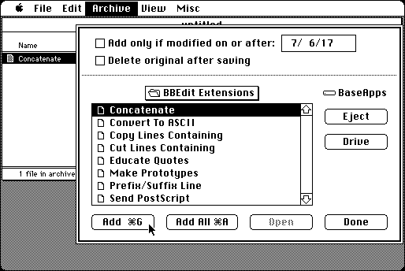

Download (external link)
Cyclos - Compact Pro 1.52
copyright: Bill Goodman
mod date: Dec 17, 1998
license: discontinued shareware, only registered users are authorized to download latest version
File compression utility.

Some version of Safari for Mac OS X have been observed to have trouble downloading this file. This turns out to be a problem with the “Open "safe" files after downloading” option in the Safari General preferences. Turn this option off. Even if it worked, this option should still be turned off, because you want the “.bin” file, rather than extracting the application in OS X.
To use this application, you can import “compact-pro.bin” into Mini vMac with ImportFl, and then open this “.bin” file with binUnpk, and then run the resulting self extracting archive application.
Here is the md5 checksum for the download, signed with Gryphel Key 5:
--------- GRY SIGNED TEXT --------- 965524d8debf3cb6dbe40b42fa8e0660 compact-pro.bin ------- BEGIN GRY SIGNATURE ------- Gry/4Xa8CFcUzxdN/KQCVgVe4A7TIa+dye7HESbGjbY30f+32kMa1bTo6yXvZXFw ZI2nfJh0hJXbAYSNzb8e0X0Dm7QNwrIB0FTN3XoZj9QWoGM4yEyOHZviQHi9wTP+ dwE5G2wjABw0tYMY8+xsk8iAXqyGPtIVUHpN8E0DkvJ1SVUCKvzSy28No+m6kFhU -------- END GRY SIGNATURE --------